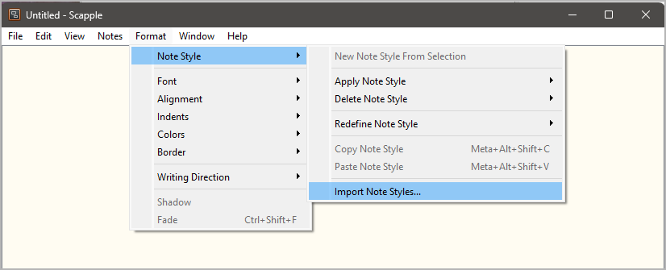

scap_novx
Benutzerhandbuch
Diese Seite gilt für die neueste Ausgabe von scap_novx.
Das Python-Skript scap_novx.py erzeugt ein novelibre-Projekt aus einer Scapple-Gliederung.
Gebrauchsanweisung
Vorgesehene Benutzung
Das Installationsprogramm fordert Sie auf, eine Verknüpfung auf dem Desktop anzulegen. Die können das Programm dann aufrufen, indem Sie mit der Maus eine .scap-Datei auf das Symbol ziehen.
Auf der Kommandozeile
Wahlweise können Sie auch
das Programm von der Kommandozeile aus aufrufen und die Scapple-Datei als Parameter übergeben, oder
das Programm aus einer Batchdatei heraus aufrufen.
Aufruf: scap_novx.py [--silent] Quelldatei
Positionsbezogene Parameter:
Quelldatei
Der Dateipfad der Scapple-Gliederungsdatei.
Optionale Parameter:
--silent Fehlermeldungen und Nachfragen unterdrücken.
Funktionsweise
scap_novx erzeugt eine neue novelibre-Projektdatei im selben Verzeichnis und mit dem selben Namen wie die Scapple-Quelldatei, doch mit der Erweiterung .novx`.
Bemerkung
Falls das novelibre-Projekt bereits existiert, wird es nicht überschrieben. Stattdessen werden XML-Figuren-, Schauplatz- und Gegenstandsdateien erzeugt, die in jedes novelibre-Projekt importiert werden können.
Konvertierungsregeln
Notizen mit einem Schatten werden zu Abschnitten konvertiert.
Abschnitte werden nach ihrer Anordnung im Scapple-Diagramm sortiert (von oben links nach unten rechts).
Umrandete Notizen mit braunem Text werden zu Plotlinien konvertiert Sie können dem Titel einen durch einen Doppelpunkt abgetrennten Kurznamen voranstellen.
Notizen ohne Rand mit braunem Text werden zu Plotpunkten konvertiert.
Notizen mit rotem Text werden zu Hauptfiguren konvertiert.
Notizen mit violettem Text werden zu Nebenfiguren konvertiert.
Notizen mit blauem Text werden zu Schauplätzen konvertiert.
Notizen mit grünem Text werden zu Gegenständen konvertiert.
Weisen Sie Figuren, Schauplätze und Gegenstände einem Abschnitt zu, indem Sie die entsprechenden Notizen verbinden.
Weisen Sie Schlagwörter Abschnitten, Figuren, Schauplätzen und Gegenständen zu, indem Sie die entsprechenden Notizen verbinden.
Weisen Sie Perspektivfiguren Abschnitten zu, indem Sie Pfeile von der Figur zum Abschnitt erzeugen.
Weisen Sie Schlagwörter Abschnitten, Figuren, Schauplätzen und Gegenständen zu, indem Sie die entsprechenden Notizen verbinden.
Weisen Sie Abschnitte Plotlinien zu, indem sie sie entweder mit der Plotlinie oder mit einer ihrer Plotpunkte verbinden.
Weisen Sie Plotpunkte einem Abschnitt durch eine Verbindung zu.
Verbinden Sie den ersten Plotpunkt mit der Plotlinie, und verbinden Sie dann die folgenden Plotpunkte als Kette in fortlaufender Reihenfolge.
Notizen mit einem „Wolken“-Rand und ohne Schatten werden zu Elementnotizen konvertiert.
Notizen mit einem eckigen Rand und ohne Schatten werden zu Schlagwörtern konvertiert.
Einfache Notizen werden in Beschreibungen der Elemente konvertiert, mit denen sie verbunden sind.
Wie man Einträge für den Export kennzeichnet
Stile importieren
Zusammen mit der scap_novx-Distribution wird ein Scapple-Beispielprojekt namens styles.scap geliefert, das alle erforderlichen Formate enthält. Sie finden dieses Beispielprojekt im novelibre-Installationsverzeichnis unter
c:\Users\<Benutzername>\.novx\scap_novx\sample\
Sie können entweder dieses Diagramm als Vorlage verwenden, oder dessen Formate in Ihr eigenes Diagramm importieren.
Wählen Sie im Dateiauswahldialog
c:\Users\<Benutzername>\.novx\scap_novx\sample\styles.scap.
Dann können Sie die Formate per Kontextmenü zuweisen:

Sie können die Formate auch über den Inspector zuweisen:

Abschnitte kennzeichnen
Wenden Sie das Section-Format per Kontextmenü oder Inspector an.
Plotlinien kennzeichnen
Wenden Sie das Plot line-Format per Kontextmenü oder Inspector an.
Plotpunkte kennzeichnen
Wenden Sie das Plot point-Format per Kontextmenü oder Inspector an.
novelibre-Notizen kennzeichnen
Wenden Sie das Note-Format per Kontextmenü oder Inspector an.
Schlagwörter kennzeichnen
Wenden Sie das Tag-Format per Kontextmenü oder Inspector an.
Schauplätze kennzeichnen
Wenden Sie das Location-Format per Kontextmenü oder Inspector an.
Hauptfiguren kennzeichnen
Wenden Sie das MajorCharacter-Format per Kontextmenü oder Inspector an.
Nebenfiguren kennzeichnen
Wenden Sie das MinorCharacter-Format per Kontextmenü oder Inspector an.
Gegenstände kennzeichnen
Wenden Sie das Item-Format per Kontextmenü oder Inspector an.
Benutzerdefinierte Konfiguration
Sie können die Voreinstellungen mit Hilfe einer Konfigurationsdatei überschreiben. Denken Sie aber immer daran, dass fehlerhafte Einträge den Programmablauf stören können.
Globale Konfiguration
Sie können eine optionale globale Konfigurationsdatei
namens scap_novx.ini
im Konfigurationsverzeichnis der Installation ablegen.
Sie wird auf jedes Projekt angewendet.
Ihre Einträge überschreiben die Voreinstellungen von nv_aeon2.
Dies ist der Pfad unter Windows:
c:\Users\<Benutzername>\.novx\scap_novx\scap_novx.ini
Lokale Projektkonfiguration
Sie können eine optionale Projekt-Konfigurationsdatei namens
scap_novx.ini in Ihrem Projektverzeichnis ablegen,
d.h. in dem Ordner, der Ihre novelibre- und
Scapple-Projektdateien enthält.
Sie gilt dann nur für das Projekt.
Ihre Einträge überschreiben sowohl die Voreinstellungen von
scap_novx als auch die globale Konfiguration, falls vorhanden.
Wie man eine Konfigurationsdatei erstellt oder anpasst
Sie finden eine Musterkonfigurationsdatei mit den voreingestellten Werten von scap_novx im novelibre-Installationsverzeichnis unter
c:\Users\<Benutzername>\.novx\scap_novx\sample\
Am besten erstellen Sie eine Kopie und bearbeiten sie.
Der Abschnitt SETTINGS bezieht sich hauptsächlich auf die Farben, d.h. auf die Textfarben, mit denen die Figuren, Schauplätze und Gegenstände in Scapple markieren. Wenn Sie sie ändern, kann sich das Programm anders verhalten anders verhalten als in der Beschreibung der Konvertierungsregeln weiter unten beschrieben.
Der Abschnitt OPTIONS umfasst Optionen für die reguläre Programmausführung.
Kommentarzeilen beginnen mit einem Rautenzeichen
#. Im Beispiel beziehen sie sich auf die unmittelbar darüberliegende Codezeile.
Das ist die Konfigurationsdatei mit Erklärungen:
[SETTINGS]
location_color = 0.0 0.0 1.0
# RGB Textfarbe für Schauplätze in Scapple.
item_color = 0.0 0.5 0.0
# RGB Textfarbe für Gegenstände in Scapple.
major_chara_color = 1.0 0.0 0.0
# RGB Textfarbe für Hauptfiguren in Scapple.
minor_chara_color = 0.5 0.0 0.5
# RGB Textfarbe für Nebenfiguren in Scapple.
plot_line_color = 0.6 0.2 0.0
# RGB Textfarbe für Plotlinien und Plotpunkte in Scapple.
[OPTIONS]
export_sections = Yes
# Yes: Aus Scapple-Notizen Abschnitte erzeugen.
export_plot_lines = Yes
# Yes: Aus Scapple-Notizen Plotlinien und Plotpunkte erzeugen.
export_characters = Yes
# Yes: Aus Scapple-Notizen Figuren erzeugen.
export_locations = Yes
# Yes: Aus Scapple-Notizen Schauplätze erzeugen.
export_items = Yes
# Yes: Aus Scapple-Notizen Gegenstände erzeugen.
Installationspfad
Das Setup-Skript kopiert scap_novx.py an einen definierten Ort. Unter Windows ist das der folgende Ordner:
c:\Users\<Benutzername>\.novx\scap_novx